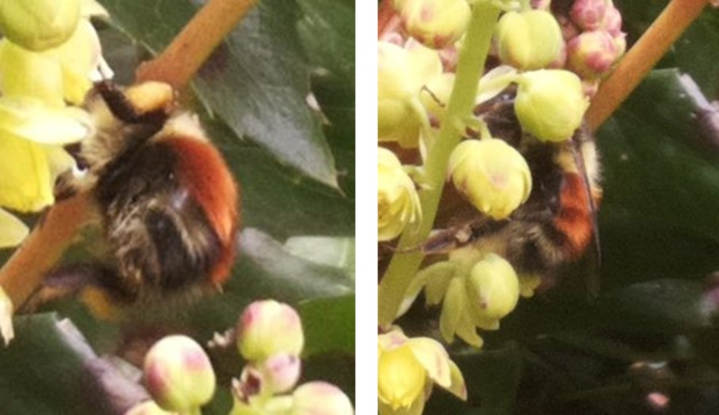

Oregon grape bee count - 2023
Reading time: 6 minutes
What we learned in 2023
The first buds opened at the Galiwatch Oregon grape patch on April 19th, which was a bit later than in previous years. Our camera trap data collection went well, but consistent onsite weather data collection failed due to multiple power outages on the Island. We were however able to access weather data from the Saturna Island weather station, which we have reported on instead.
What we saw:
- The phenology (timing of flowering) of Oregon grape is variable from year-to-year with bud break occurring anywhere from the beginning of the 2nd week of April (2022) to the end of the 3rd week of April (2023), and with the blooming period ranging from 19 to 26 days.
- Timing of bud break is not easily explained by changes in average daily temperatures, or the amount of rainfall in the weeks prior to blooming.
- This year, the growth of a large proportion of Oregon grape inflorescences (flower spikes) stalled and did not go on to produce flowers.
- Three bumblebee species among the six species currently known to be present on Galiano were identified in the pictures from the camera traps:
- Bombus sitkensis (Sitka bumblebee) - 90% of bee sightings
- Bombus melanopygus (orange-rumped or black-tailed bumblebee) - 5% of bee sightings
- Bombus flavifrons (yellow-fronted bumblebee) - 1% of bee sightings
- Several species of solitary bees were spotted (4% of bee sightings), one of which was identified as an Andrena sp.
- Bumblebees were seen within 12 hours of the first buds opening and by the time the flower spikes were around 50% in bloom, were feeding from sunrise to sunset, rain or shine. While bumblebee visits were generally less than a minute, solitary bees often visited for several minutes.
- Other insects visiting Oregon grape while it was flowering included the Montana six-plume moth (Alucita montana), the Western white-ribboned carpet moth (Mesoleuca gratulata), stilt bugs (family berytidae, genus Neoneides), the obscure root weevil (Sciopithes obscurus), and brown stink bugs (genus Euschistus).
Surveillance set-up
This year we had two Raspberry Pi cameras set up on the Oregon grape patch collecting pics every 15s from dawn till dusk. When positioning the cameras, we look for locations where the plants are healthy and have several flower spikes emerging. The plants were looking great this spring, and we put one camera at the centre (Cam 1) and one at the edge (Cam 2) of the patch. We started collecting pictures on April 1st well before we expected the first buds to break. By April 12th there were 5 flower spikes maturing nicely in both locations.

Weather and phenology
Due to technical difficulties, our Accurite weather station did not give reliable data for the 2023 spring surveillance period. 2023 weather data collected on Saturna Island was used instead.
Daily temperatures 2023
Daily precipitation 2023
Phenology
The camera traps showed the first buds to open were on the plant at the edge of the Oregon grape patch on April 19th. The weather stayed cool and wet for the next few days and although buds on one flower spike at Camera 1 and two at Camera 2 slowly opened, others that looked healthy at set-up on April 12th did not mature or produce flowers.
As average daily temperature rose, flower buds steadily opened and the plants were around 50% in bloom when bee visits peaked around April 24th to 26th. All viable buds had opened by May 3rd with berries set at the base of the flower spikes while flowers at the top continued to provide pollen and nectar for bees and other pollinators. There were no bees to be seen in the camera traps after May 7th and flowering was as good as over by May 10th.
Annual variations
We have seen a lot of variation in weather conditions and phenology of Oregon grape over our first three years of data collection.
| Year | Weather conditions |
|---|---|
| 2021 | Avg. daily temperatures between 6oC and 8oC from mid-Mar to Apr 12th. A sharp increase in avg. daily temperature to over 10oC on Apr 13th was followed by bud break on Apr 14th. Rainfall two weeks prior to blooming - rain on 2 days; total 3 mm. Rainfall during blooming (Apr 14th - May 3rd) - 5 days; total 12.7 mm |
| 2022 | Avg. daily temperatures between 6oC and 8oC from mid-Mar to early Apr. A sharp increase in avg. daily temperature on Apr 7th from 6oC to just over 10oC was followed by bud break on Apr 9th. Extended cool weather rarely reaching 10oC for remainder of flowering. Rainfall two weeks prior to blooming - 6 days; total 33.8 mm. Rainfall during blooming (Apr 9th to May 5th) - 16 days; total 96.5 mm. |
| 2023 | Avg. daily temperatures fluctuating between 5-6oC for a few days to around 9-10oC for a few days from mid-Mar to early Apr. Despite warmer temperatures of 9-10oC between Apr 6th and 9th, bud break did not start until Apr 19th. Rainfall two weeks prior to blooming - 9 days; total 27.6 mm. Rainfall during blooming (Apr 19th to May 10th) - 9 days; total 23.8 mm. |
Average daily temperature and bud break

Comparisons in phenology over three years of data collection
| Stage | 2021 | 2022 | 2023 |
|---|---|---|---|
| Bud break | Apr 14th | Apr 9th | Apr 20th |
| Fully flowering | Apr 27th | Apr 29th | May 5th |
| Flowering over | May 3rd | May 5th | May 10th |
| Days in bloom | 19 | 26 | 29 |
Bee count
Three of Galiano’s known bumblebee species were caught on camera traps at the Oregon grape patch, as well as some solitary bee species.
Bee visitors on Oregon grape throughout flowering

Bee visits on wet and dry days
We saw bumblebees and solitary bees working through the showery weather that is typical here on the west coast through the spring months.
Species notes
Bombus sitkensis (Sitka bumblebee): the first and most common bee we saw was B. sitkensis, caught on camera on April 19th within 12 hours of the first flower opening.
These hard-working bumbles were up and out collecting pollen from dawn to dusk throughout the flowering period. Although we usually think of bees buzzing around in the sunshine, B. sitkensis came out on colder days and, although in lower numbers, even in the pouring rain. The number of visits per day peaked 5 days after the blooms first opened when approximately 50% of the buds on the flower spikes were open.

Bombus sitkensis count

Bombus flavifrons (yellow-fronted bumblebee): B. flavifrons was first caught on camera on April 24th. We didn’t see one again until the 29th and then not till May 1st, perhaps these were queen bees newly emerged from winter hibernation. From May 1st to 7th we saw B. flavifrons every day until the 7th even though very few blooms were left.
Bombus melanopygus (orange-rumped or black-tailed bumblebee): we only saw this bumble species twice, on April 20th, and 25th. Perhaps these bees are also newly emerged queens looking for their first taste of nectar.

Solitary bees: small black bees started showing up in our camera traps on April 24th and visited the Oregon grape patch until May 4th. We were able to ID one of these as a mining bee, Andrena sp., but the camera resolution was insufficient to ID any of the other small bees. Altogether we saw solitary bees on 11 occasions on 6 different days.

Bee feeding habits
Early to rise, late to bed, or somewhere in-between
Different species of bees may feed at different times of day. B. sitkensis and B. flavifrons were both observed within 5 - 10 minutes of sunrise right up to sunset. In contrast, we only saw the solitary bees in the afternoons between 1pm and 4.30pm; however, our sample size of solitary bees was very small (11 in total) so it’s possible this observation may not stand the test of time.
Bumblebee activity around sunrise and sunset
The best time of day for collecting pollen and nectar
The bumble bees were busier in the afternoons than in the mornings - 89 visits before noon compared to 221 visits after noon. Notably, the number of visits per hour was similar from mid-day to sunset despite the patch being in shade from around 4 pm.
Timing of bumblebee visits during flowering (Apr 19th to May 10th)

A quick snack or a leisurely meal?
We noticed differences in the feeding habits of the different bee species. Generally, we saw most bumblebees regardless of species spent less than 30 seconds feeding at a single flower spike during a visit. The bees that stayed longer typically fed for short intervals at multiple flowers on the spike. Solitary bees on the other hand were seen feeding for variable amounts of time between less than 30 seconds and 7 minutes, generally spending more time in a flower than the bumblebees before moving to the next.
Duration of bee-flower interactions
Other pollinators and insects caught on camera


Summary
We are steadily improving our surveillance methods at the Oregon grape patch, and are now capturing more extensive phenological information, have improved bee identification, and are documenting weather patterns and bee behaviour. Our goals for the 2024 season are:
On-site weather data collection
Bee count data collection with camera traps supplemented with video surveillance
Additional cameras to get close ups that improve bee species identification
Documentation of phenology and estimates of total floral resources in the patch
Continued photo documentation of other insects